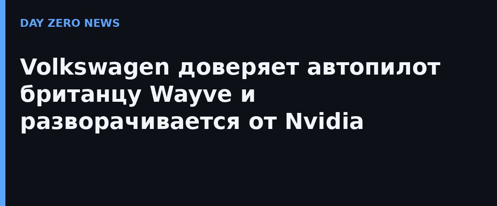

Volkswagen ищет нового технологического партнёра в автономном вождении после ухода из альянса с Bosch, и выбор, по информации Spiegel, пал на Wayve — лондонский стартап, основанный в 2017 году. Решающими стали тестовые заезды в самом Лондоне: в Audi A6 e-tron с ПО Wayve автомобиль самостоятельно распознал, что встречный водитель фарами уступает ему проезд, и припарковался без единой команды человека. ИИ-система обошла несколько конкурирующих команд, среди которых была и Nvidia — крупнейшая в мире по капитализации ИИ-компания.
Философия Wayve — полный отказ от детальных 3D-карт и правил, написанных руками. Система «AI Driver» построена на сквозном обучении: одна нейросеть проходит путь от сырых данных с камер до управления рулём. Обкатка на реальных дорогах позволяет ей езжать и там, где заранее не тренировалась. Модель уже встраивается в машины Stellantis, Nissan и Mercedes-Benz — и все три концерна являются инвесторами Wayve; всего стартап привлёк около $2,8 млрд.
Важно: и Volkswagen, и Wayve официального подтверждения сделки не выпускали — вся информация идёт из репортажа Spiegel со ссылкой на три «инсайдерских» источника, включая топ-менеджера концерна. Так что до формального объявления VW контракт остаётся подробностью журналистского расследования, хотя и очень хорошо документированного.
В России своё беспилотное такси «Яндекс» уже несколько лет ездит по Москва и Сириусу, тоже опираясь на нейросети и отказавшись от классической схемы с размеченными картами, — так что направление, в которое смотрит Volkswagen, нам не чужое.